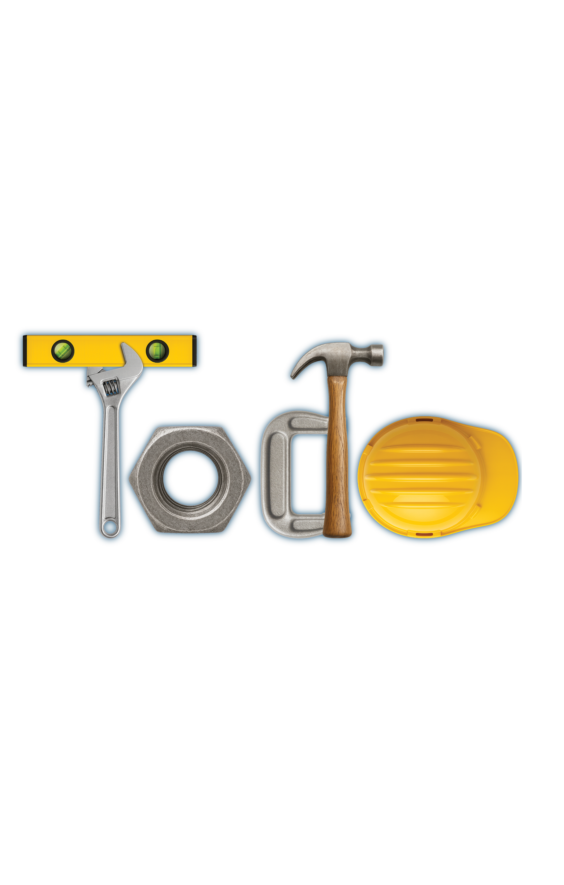

Temporada 1
Cómo empezó todo.
Las primeras conversaciones: lo que aprendieron discutiendo, criando y sosteniéndose. Están completas en sus canales.
El podcast de Efrén y Michelle
Matrimonio real, sin filtro y con fe. Lo que se dice cuando se cierra la puerta, en video y en audio.
Sólo Efrén y Michelle. Las predicaciones van aparte.

Escúchalo aquí
YouTube · el canal Abrir el canal
Se abre la lista completa del canal, del episodio más reciente hacia atrás.
Spotify · el show Abrir en Spotify
Los episodios y sus fechas los publica Spotify; aquí no se toca nada.
Temporada 1
Las primeras conversaciones: lo que aprendieron discutiendo, criando y sosteniéndose. Están completas en sus canales.
Se abren en YouTube, donde se publican primero.
Temporada 2
Dinero, suegros, perdón y las noches en que nadie quiere ceder. Mismo formato, conversaciones más largas.

Del podcast al libro
Cinco días para construir un «nosotros» con intención. En cinco puntos veremos cómo preparar el terreno, afirmar los cimientos, crear conexión, reparar las grietas y construir una relación real.
Efrén + Michelle Ruiz
Que no se confunda
Aquí sólo hay episodios y clips de Efrén y Michelle. Las predicaciones de RÍO se publican por su cuenta, y las conferencias de Michelle están en su propia página.
Tu pregunta
Si hay algo que quieres que Efrén y Michelle respondan en el podcast, escríbelo aquí.
Conecta conmigo
Tengo mucho que contarte, y prefiero hacerlo aquí que a través de un algoritmo que decide por las dos.
Con amor, Michelle